AI Academy · Level 1 · Grade 6 · Week 26 · Student lesson
Prompts Are Design Instructions
Learn to understand, design, build, test and explain AI systems responsibly.
Project: Helpful Classroom Sorter
Before you start
Week 25: generation produces new content that requires checking.
Plan time to read, investigate and explain. Keep predictions separate from observations.
Student lesson · 1 of 17
Your mission
Your learning target
I can write a prompt with a clear task, supplied evidence and checkable output requirements.
I can test a response against criteria chosen before seeing it.
I can revise a prompt using observed failures while preserving missing and conflicting information.
Remember before reading
Close your notes first. A rough first answer helps us choose the right starting point; it is not a score for your ability.
Without opening the old lesson, explain one key idea from Generate, Retrieve, or Calculate?. Give an example and a mistake that the idea helps you avoid.
Without opening the old lesson, explain one key idea from Fair for Whom?. Give an example and a mistake that the idea helps you avoid.
Without opening the old lesson, explain one key idea from Recommendations. Give an example and a mistake that the idea helps you avoid.
After trying, check the relevant lesson or ask your teacher. Change the part of your explanation that the evidence shows was wrong.
Clear goals, context, and constraints improve usefulness, not truth guarantees.
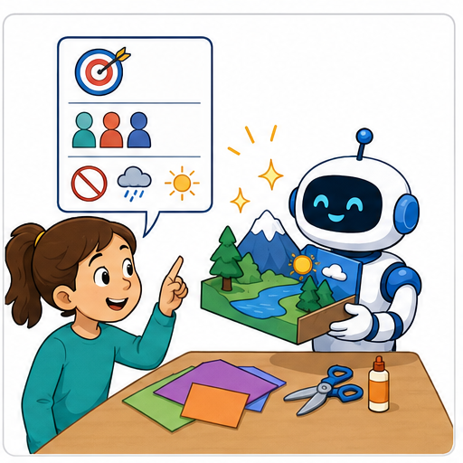
Learner name:
Readiness for the connected explanation
A generated invitation adds a meeting time that is absent from its source. Does fluent wording make that time supported? What should happen next?
This week’s end goal
By the end, I can write a prompt contract that handles absent and conflicting facts.
Student lesson · 2 of 17
Notice the evidence
PICTURE STORY
Look Closely Before You Explain
Pictures give clues; evidence tells us what the clues mean.

What do you notice?
Name three visible details without explaining them yet.
Circle the detail most connected to the system's decision.
Name one detail that may be decoration or distraction.
Make a first prediction and state the clue that supports it.
My observations, prediction, and evidence:
A closer explanation
“Write something good about our club” leaves many decisions unstated. Who will read it? Which facts may be used? What must the output contain? A more useful prompt states the job, audience, evidence and requirements. This makes it easier to judge the result rather than choosing the answer that sounds most confident.
Use this fictional source C: the paper modelling club meets Monday in Room 7, and participants bring paper. C gives no start time. Our task is a short information card for Grade 6 readers. It must report day, time, place and what to bring, using only C. There is no need to supply names or private information.
Prompt P1: Using only source C, produce an information card for Grade 6 readers. Return exactly four labelled lines in this order: Day, Time, Place, Bring. Copy or faithfully restate each supported value. For a missing value write “not stated”. Add no other details. Source C: the paper modelling club meets Monday in Room 7; bring paper.
Student lesson · 3 of 17
See how it works
VISUAL MECHANISM
Input → Process → Output
Follow the information instead of imagining magic inside the machine.
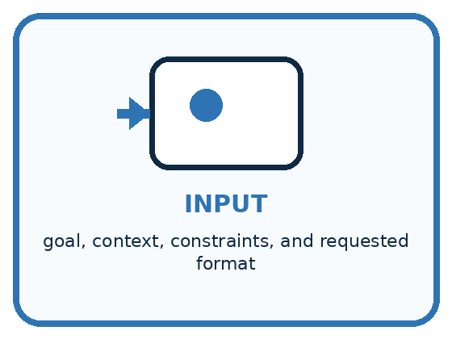
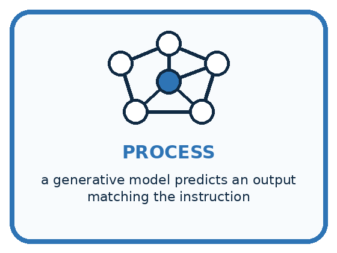
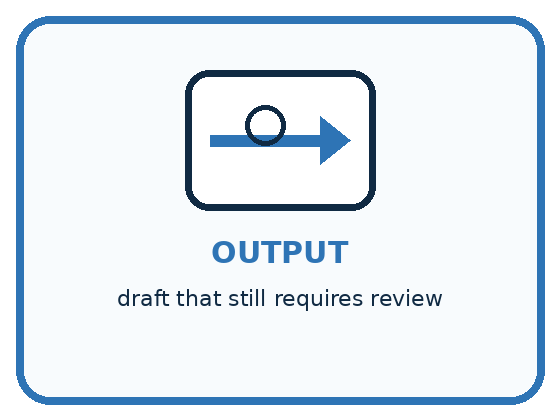
INPUT goal, context, constraints, and requested format
PROCESS a generative model predicts an output matching the instruction
OUTPUT draft that still requires review
Draw a fresh example with all three stages:
A closer explanation
From prompt requirement to evidence of success
For P1, an acceptable card has Day: Monday; Time: not stated; Place: Room 7; Bring: paper, each on its own line. The semicolons here separate lines for discussion. A correct format with an invented 3 pm time still fails the evidence requirement. Accurate facts inside a long paragraph still fail the requested four-line format.
These are classroom response examples written for inspection, not measurements from a live AI system. You can test the instructions by asking a partner to follow them on paper. That checks how clear the instructions are, but it does not prove that a model will always follow them.
Connect the picture and the explanation
Point to the input, the deciding step and the result in this week’s visual. Explain the same step in ordinary words. A picture helps when you can say what each part represents.
Student lesson · 4 of 17
Compare the cases
PICTURE GALLERY
Four Cases, Four Clues
Use the visual cue, then read the evidence carefully.
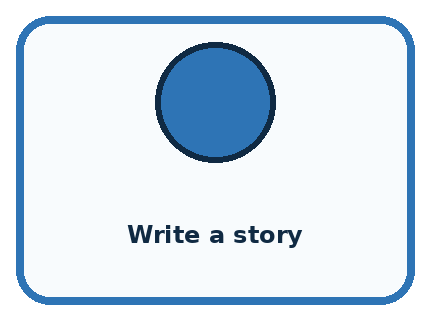
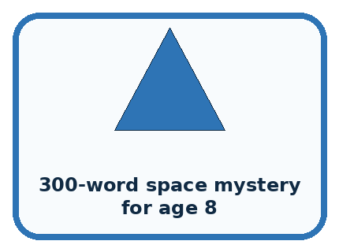
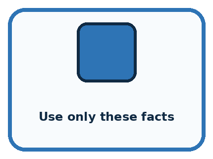
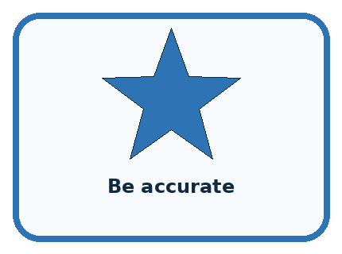
CASE 1 — Write a story Clue: goal underspecified. Meaning: vague prompt.
CASE 2 — 300-word space mystery for age 8 Clue: audience and format clear. Meaning: better direction.
CASE 3 — Use only these facts Clue: evidence boundary. Meaning: still verify.
CASE 4 — Be accurate Clue: wish without checking plan. Meaning: not a guarantee.
Which two pictures are easiest to confuse? What evidence separates them?
Change one thing in the pictured case
Change: Add source B naming the same exhibit duration 20 minutes, with B declared current and authoritative.
Prediction: Duration becomes 20 minutes.
Reason: There is now an authorised source for the previously missing field.
Student lesson · 5 of 17
Words that unlock the idea
VOCABULARY
Words You Can See and Use
The badge is a memory cue; the definition does the real thinking work.
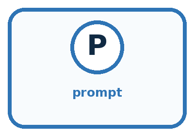
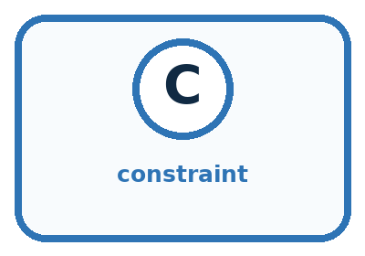
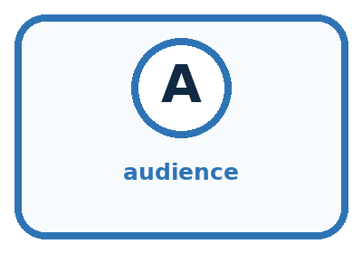
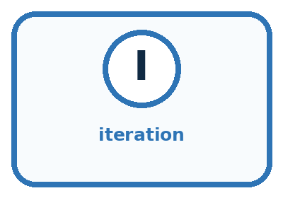
| Word | Meaning | My example |
|---|---|---|
| prompt | instruction and context given to a generative system | |
| constraint | limit the output must follow | |
| audience | intended reader or user | |
| iteration | revising instructions after evaluating a result |
Misconception detective
CLAIM TO REPAIR A perfect prompt can force a model to know missing facts.
Use one vocabulary word and one piece of evidence to repair it:
Words used in the closer explanation
| Word | Meaning |
|---|---|
| Criterion | A stated rule used to judge a response |
| Test case | A particular input with expected behaviour used to check a process |
| Revision | A documented change intended to address a specific problem |
Student lesson · 6 of 17
Follow a worked example
WORKED EXAMPLE
Watch the Reasoning, Not Just the Answer
Every step connects a claim to observable evidence.

STEP 1 — OBSERVE goal, context, constraints, and requested format
STEP 2 — TRACE a generative model predicts an output matching the instruction
STEP 3 — CONCLUDE draft that still requires review
What new evidence could change this answer?
A closer explanation
| Test input | Expected behaviour | What it reveals |
|---|---|---|
| C plus a stated 3 pm time | Use 3 pm for Time | Can use supplied information |
| Original C with no time | Time: not stated | Does not fill a gap by guessing |
| C and D disagree on room | Flag the room conflict | Does not silently choose a record |
For the third case, D describes the same event as C but gives Room 9, and neither record is marked as replacing the other. P1 explains missing values but says nothing about disagreement. Revise that weakness: if supplied records conflict about a requested field and no priority is given, write “conflicting information” for that field. Preserve values that do not conflict.
Call the revision P2 and keep the rest of P1 unchanged, except that it now refers to the supplied records rather than C alone. The place field should flag the conflict; it must not silently choose Room 7, choose Room 9 or combine them into Room 79. A later authoritative correction may resolve the conflict, but this input does not provide one.
Learn from the worked case
Cover the result before checking it. Say what is given, choose the procedure, and follow one step at a time. Then uncover the result and explain your first mismatch. Ask why a step is allowed, not only what number it produces.
A pictorial worked case: Prompts Are Design Instructions
A fictional club needs a short exhibit card, without guesses.
The facts we will use
Source A: exhibit Paper Birds, location Shelf 2. No duration appears.
Required output: two labelled lines, Exhibit and Duration; missing values must say not supplied.

Read the picture one step at a time
Why this result follows
A useful prompt describes both the wanted answer and what to do when evidence is insufficient. Asking for a duration does not create one. Examples can demonstrate the format, but they must not become sources of event facts. Check content support separately from whether the answer looks tidy.
What this example does not establish
Even a complete prompt does not guarantee an AI system follows it; test returned outputs against the contract.
Read the labelled picture: What must happen if B instead conflicts with another equally authoritative duration record?
Change one thing: Add source B naming the same exhibit duration 20 minutes, with B declared current and authoritative. Predict the result before checking the explanation. What remains the same?
Student lesson · 7 of 17
Find and repair a mistake
COMPARE
Same Result, Different Reason
A comparison helps reveal the true concept boundary.
| Case | Evidence | What it shows |
|---|---|---|
| Write a story | goal underspecified | vague prompt |
| 300-word space mystery for age 8 | audience and format clear | better direction |
| Use only these facts | evidence boundary | still verify |
| Be accurate | wish without checking plan | not a guarantee |
Repair two tempting claims
CLAIM A A perfect prompt can force a model to know missing facts.
Repair:
CLAIM B Adding more words always makes a prompt better.
Repair:
A closer explanation
Suppose a revised prompt handles three classroom examples correctly. You can report that it passed those examples under the recorded conditions. You cannot conclude that it will always work. If outputs can vary between runs, plan repeated trials and keep every result. A single good response is not a reliability guarantee.
Use the failures to improve the specification and add revealing cases. Keep the same evaluation criteria when comparing versions; changing both the prompt and the scoring rule makes the comparison hard to interpret. A new requirement may justify a new criterion, but document that change rather than pretending the results used the same test.
Student lesson · 8 of 17
Practise together
GUIDED PRACTICE
Try It, Check It, Explain It
Use support now so you can succeed independently later.

Explain how the picture story demonstrates this idea: Clear goals, context, and constraints improve usefulness, not truth guarantees.
Use a fresh example to explain prompt.
Trace a new input → process → output example.
Find and repair the error in: Adding more words always makes a prompt better.
Invent one edge case and name the safe response.
A closer explanation
A small test log can record prompt version, input case, output, each criterion’s result and the reason for failure. If you use an approved model, also record the model and available settings. Compare prompt versions on the same cases under the same recorded conditions. Keep all observed outputs rather than only the best-looking attempt.
P1 already tells the model not to invent missing values. A failed output can therefore be a failure to follow an adequate instruction, not necessarily a missing instruction. Inspect the actual output, retain the failure and try targeted changes if useful. Clear prompting helps communicate requirements but cannot guarantee correctness, remove the need for checks or grant permission to use restricted data.
Practise with less help: Score a response by separate criteria
Use workbook W2 for the connected example “Specifying and testing prompts”. First fill the input and rule boxes. Try the middle steps before asking for a hint. After a hint, try the next step yourself.
| Plan | Do | Check |
|---|---|---|
| What is given? Which rule or procedure applies? | Record each intermediate step. | Does the result follow? What remains unknown? |
Explain your trace to a partner. Your partner points to one step to check. Swap roles on the next case. Each person writes their own explanation.
Check your reasoning
Use the worked case for Specifying and testing prompts. Proposed explanation: “A tidy response is a correct response”. Decide whether this explanation is supported. Point to the step or supplied fact that decides; explain your repair if needed.
Answer on your own before discussion. If you are unsure, say which step you need help with.
Explain the picture
What must happen if B instead conflicts with another equally authoritative duration record?
This is supported practice. Keep the separately named independent case for an attempt before feedback.
Student lesson · 9 of 17
Run the investigation
EXPLORER LAB
Prompt Revision Studio
Predict first, test honestly, and explain what the evidence means.

State your prediction before the result is known.
Complete the task: Revise a vague story prompt and compare both outputs.
Keep a normal case and an edge case clearly separated.
Record what happened—even when it does not match your prediction.
Explain the result, one limitation, and the next useful test.
| Case | Prediction | Observed result | What it means |
|---|---|---|---|
| Normal | |||
| Edge |
Plan → try → check
Before trying: what do I expect, and why? While trying: which step could first go wrong? Afterwards: what did I actually observe, and what should change? Keep “not run” if you only traced the procedure.
Student lesson · 10 of 17
Build your understanding
PRACTICE LADDER
Climb from Recall to Defense
Each step asks for a stronger kind of understanding.

RECALL Define prompt.
EXPLAIN Clear goals, context, and constraints improve usefulness, not truth guarantees.
TRACE Show the input, process, and output.
DIAGNOSE Repair: A perfect prompt can force a model to know missing facts.
TRANSFER Apply the idea to a new home or classroom case.
CREATE Design one revealing test.
DEFEND Give a claim, evidence, mechanism, limit, and safe action.
Student lesson · 11 of 17
Connect your project
PROJECT
Helpful Classroom Sorter
Build one coherent system across the year, one evidence-based decision at a time.

What real classroom need does this serve?
What information is necessary—and what should stay private?
What happens inside the process?
What normal and edge cases will you test?
When should it say not sure or ask a person?

My project decision:
Evidence for your project
Specify sorter input, output fields, evidence limits and missing/conflict behavior before improving its wording.
Student lesson · 12 of 17
Show what you know
MASTERY
Fresh-Case Independent Proof
Complete this after teaching and guided practice have ended.

□ Name or draw the fresh case.
□ Trace input, process, and output.
□ State the conclusion and strongest evidence.
□ Name one limit, failure, missing clue, or fairness/privacy concern.
□ Explain one safe next action or improvement.
Independent evidence:
My level: □ Not yet □ With one hint □ Independently □ I can teach it
Student lesson · 13 of 17
Study a complete case
Week 26 Worked case
Use the supplied details to practise the weekly concept before attempting the independent question. This case extends the illustrated lesson.
The situation
The prompt says make it good; the desired output is a four-line rain poem using simple words.
The question
Write a checkable prompt.
Worked explanation
Ask for exactly four lines about rain in simple vocabulary. Check line count, topic and vocabulary separately.
Explain it in your own words
Which detail supports the answer, and why does it matter?
Trace the supplied case visually
Make a poem request checkable
| Evidence or stage | Value or result |
|---|---|
| Length | Exactly four lines |
| Topic | Rain |
| Vocabulary | Simple words |
| Check | Inspect all three requirements |
The prompt says make it good; the desired output is a four-line rain poem using simple words.
Write a checkable prompt.
Ask for exactly four lines about rain in simple vocabulary. Check line count, topic and vocabulary separately.
Student lesson · 14 of 17
Try a new case independently
Independent case: Specify and test a new exhibit card
Fictional record X says an exhibit is called Shadow Pairs and is in Hall 2; no opening time is given. Write a complete prompt for a Grade 6 card with exactly three labelled lines: Title, Location, Opening. Limit facts to supplied records, define missing and conflicting values and prohibit added claims. Give two test inputs and expected outputs: original X, then X with an opening time of 10 am added.
Attempt this case before feedback. Record any help. Earlier examples below are further practice; a case already practised with feedback cannot establish fresh transfer.
Week 26 Independent application
Close the worked explanation. Apply the idea to this different question without copying.
Improve this prompt: tell me about space. Specify a reader, a focused task and an output format suitable for a young learner.
My answer, with a trace, calculation or supporting evidence
Create and test
Change one relevant detail. Predict the result before testing. Include a boundary or missing-information case when it helps reveal a limit.
My changed input and expected result
Connect to your project
Write a transparent instruction for any generative explanation in the sorter and forbid invented item facts.
The evidence I will keep
Your teacher has the independent answer and scoring criteria. Complete the matching workbook week to keep your practice evidence together.
Transfer practice from the original programme
Write a request for a three-bullet explanation of evaporation for Grade 6 using only a supplied paragraph. Create three separately checkable acceptance criteria. What should happen if the paragraph does not explain evaporation?
Use feedback to improve
Attempt the independent case before hints. Record whether you worked alone, used a hint or followed a model. After feedback, fix the first unsupported step and explain why it changed. A later check uses a changed case, not a copied answer.
Student lesson · 15 of 17
Your lesson route
Start with this question: A fictional club needs a short exhibit card, without guesses.
| By the end, I can | How I will show it |
|---|---|
| Write a prompt with a clear task, supplied evidence and checkable output requirements | Explain the deciding step, show a trace or test, and state one limit. |
| Test a response against criteria chosen before seeing it | Explain the deciding step, show a trace or test, and state one limit. |
| Revise a prompt using observed failures while preserving missing and conflicting information | Explain the deciding step, show a trace or test, and state one limit. |
Remember → watch and explain → try with help → investigate → try independently → keep project evidence. Your teacher may spread this lesson across several classes.
Keep your first prediction. Compare it with what the evidence shows and explain any change.
Student lesson · 16 of 17
Finish and return
Close your notes. Explain this goal in your own words: Write a prompt with a clear task, supplied evidence and checkable output requirements
If you are unsure, return to the worked picture and explain one arrow. If you are ready, change an input or assumption and justify your prediction.
Save your workbook evidence. At the next review, try a different case before opening your old answer.
Student lesson · 17 of 17
Supported practice, repair and portfolio
Use this supported practice once, in the browser or on paper. Keep the reserved independent assessment for a separate first attempt before teacher feedback.
A fictional club needs a short exhibit card, without guesses.
Practice 1: explain the deciding evidence
Which labelled step matches this detail? Check labels, two-line format and each factual claim.
1. State task
2. Follow missing rule
3. Find evidence
4. Check contract
Hint if needed: Read the steps in the pictorial case. Match the supplied detail to the stage that performs or records it.
After your attempt, compare with the supported explanation: Check contract Check labels, two-line format and each factual claim. A useful prompt describes both the wanted answer and what to do when evidence is insufficient. Asking for a duration does not create one. Examples can demonstrate the format, but they must not become sources of event facts. Check content support separately from whether the answer looks tidy.
Practice 2: explain the deciding evidence
Changed-case practice: Add source B naming the same exhibit duration 20 minutes, with B declared current and authoritative. Which conclusion is supported by the supplied facts?
1. We can decide the result without examining the changed input or the procedure.
2. This one example guarantees correct results for every future input.
3. Duration becomes 20 minutes.
Hint if needed: Use the changed condition and the deciding step in the pictorial trace. The answer must say what follows from those facts.
After your attempt, compare with the supported explanation: Duration becomes 20 minutes. There is now an authorised source for the previously missing field.
Repair a missing building block
Review Generate, Retrieve, or Calculate? (ai-1/25). Goal: Distinguish retrieving a record, calculating from inputs and generating wording. Short practice: Label each arrow with its operation. Can the system add snacks because invitations often mention them?. Return to this week and explain what you changed.
Review Fair for Whom? (ai-1/23). Goal: Compute a correct-out-of-assessed fraction and explain its denominator. Short practice: Which group loses performance under N, and can total improvement erase that fact?. Return to this week and explain what you changed.
Review Recommendations (ai-1/20). Goal: Apply eligibility requirements before ranking candidates by preferences. Short practice: Why does the recommendation change without changing anyone’s preferences?. Return to this week and explain what you changed.
Keep your completed work
Use Download completed work in the hosted lesson to export your answers, reflections, practice feedback and code-run evidence. Open the HTML copy to read or print it. Drafts stay in this browser when storage is available; clear drafts on a shared device.